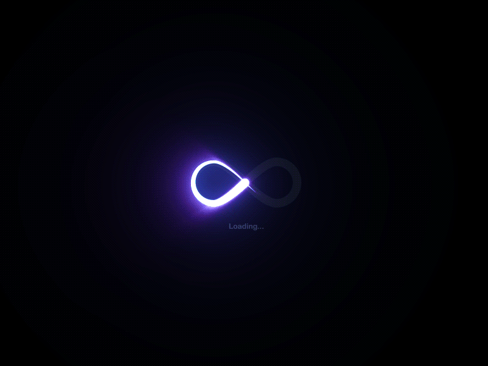

visual rhythm
Неровная сетка, контрастные отступы и спокойная палитра вместо стандартной карточной однообразности.
personal identity concept
Пример bio page с более живой композицией: не просто аватар и ссылки, а настроение, паузы, крупная типографика и ощущение личности.

Неровная сетка, контрастные отступы и спокойная палитра вместо стандартной карточной однообразности.
Блоки можно наполнить статусами, коротким манифестом, контактами, релизами или ссылками на работы.
На телефоне страница не схлопывается в кашу: остаётся ритм, воздух и читаемость.